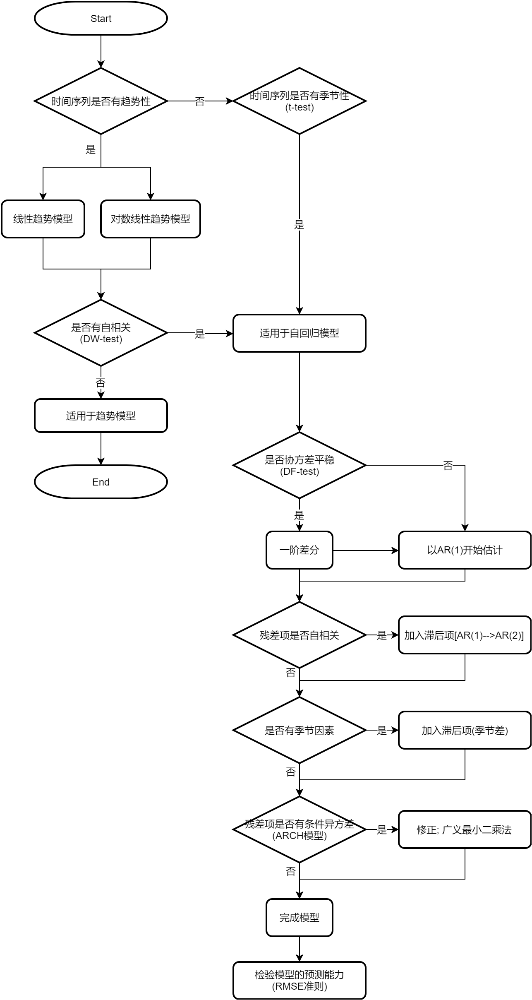
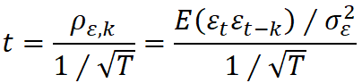

时间序列预测的步骤
--------------------

--------------------
时间序列的困难
--------------------
- 残差项之间的自相关
- 时间序列的均值及方差随时间变化
--------------------
趋势模型 Trend Models
--------------------
- Linear Trend Models yt=b0+b1t+εt
- Log-Linear Trend Models yt=eb0+b1t
--------------------
自回归模型 AutoRegressive (AR) Time-Series Models
--------------------
- AR(1): xt=b0+b1xt-1+εt
- AR(n): xt=b0+Σbixt-i+εt
- 协方差平稳 Covariance-Stationary
- 协方差平稳条件
- 变量均值预期存在且不变
- 变量方差存在且不变
- 变量间协方差存在且不变
- 均值复归 Mean Reversion
- xt=b0/(1-b1)
- 如果一个时间序列是协方差平稳的, 那么一定均值复归
- 当b1=1时, 这组数据有单位根(unit root), 这时没有均值(协方差不平稳), 变化也没有规律, 呈现随机游走
- 简单随机游走 xt=xt-1+εt
- 带漂移项的随机游走 xt=b0+xt-1+εt
- 检验方法: 用DF检验(Dickey-Fuller test)时间序列的协方差是否平稳
- 将公式改写 xt-xt-1=b0+(b1-1)xt-1+εt
-
原假设H0: 有单位根且协方差非平稳, b1-1 等于 0
备择假设Hα: 无单位根且协方差平稳, b1-1 小于 0
- 运用t检验, 如果b1-1显著性不等于0, 则拒绝原假设, 即没有单位根且协方差平稳
- 修正: 一阶差分 first differencing
- 假设 yt=xt-xt-1=εt
- 用yt建模AR(1): yt=b0+b1yt-1+εt
- 如果仍然非平稳, 则对yt再做一次差分, 直到数据平稳为止
- 自相关
- 自相关现象指残差项之间有相关性
- 检验方法

- 原假设H0: error autocorrelation = 0
- 如果t统计量较大, 表明相关系数显著不等于0, 拒绝原假设, 存在自相关现象
- 修正: 模型中增加滞后自变量
- 用AR(2)建模: xt=b0+b1xt-1+b2xt-2+εt
- 如果仍然有自相关现象, 用AR(3)建模, 直至没有自相关现象
- 季节性 Seasonality
- 加入上一周期的同期自变量, 即AR(T)建模 xt=b0+b1xt-1+b2xt-T+εt
- 条件异方差
- 条件异方差指残差项波动不稳定, 且波动与自变量相关
- 检验方法: 用ARCH模型检验自回归条件异方差, 多元回归分析中的BP检验不适用
- ARCH(1)建模: σt2=a0+a1σt-12+ut
或简化后 εt2=a0+a1εt-12+ut
- 原假设H0: a1=0
- 如果a1显著不等于0, 则拒绝原假设, 存在条件异方差现象
- 修正: 广义最小二乘法
- 检测自回归模型的预测能力
- 样本内误差 in-sample forecast errors
- 样本外误差 out-of-sample forecast errors
- 均方根误差 root mean squared error, RMSE
- 用于比较多个自回归模型的预测能力
- 将估计的Y值与真实Yi值做差的平方, 求均值, 再开方
- 均方根误差越小, 模型预测能力越强
- 回归系数不稳定问题的常见原因
- 很多数据的关系随时间变化
- 大样本数据(长期历史数据)容易导致数据本身性质的变化
- 短期数据又存在数据样本较小的问题
- 移动平均模型
- n期移动平均
- 时间序列的移动平均模型
- 将观本期测值表示成上一期的残差项和本期残差项的线性函数 xt=εt+θεt-1
- 变量间的自相关会很快降低到0
- 多个时间序列的回归
- 所有时间序列都没有单位根时, 协方差平稳, 可以做多元回归
- 同时有时间序列有单位根, 也有时间序列没有单位根, 不能做多元回归
- 所有时间序列都有单位根时, 协方差不平稳
- 如果这些时间序列之间是协整的 cointegration, 可以做多元回归
- 如果这些时间序列之间不是协整的, 不能做多元回归
- 用DF-EG检验(Dickey-Fuller Engle-Granger test)验证两个时间序列是否协整
--------------------
Next Chaptor